人形机器人非线性状态估计框架
Jingchao Li、Zhaohui Yuan、Sheng Dong、Jingqin Zhang、Jianrui Zhang
《机器人与自主系统》153 (2022), 104100
DOI: 10.1016/j.robot.2022.104100
摘要
本文提出一种基于质心（CoM）动力学和双环卡尔曼滤波器（DLKF）的人形机器人非线性状态估计框架。该框架有效融合惯性测量单元（IMU）、关节编码器和足底力敏电阻（FSR）的信息，为多种步态生成算法及采用 CoM 或运动发散分量（DCM）反馈的动态平衡控制器提供状态估计。与广泛使用的线性倒立摆模型（LIPM）等线性模型相比，CoM 的非线性动力学能够有效降低过程误差。然而，人形机器人是具有多个连杆和关节的高度复杂动力系统，CoM 动力学本身也是对全身动力学的简化。因此，它会产生非零均值、非高斯且相关的过程误差，而传统扩展卡尔曼滤波器（EKF）无法处理这类误差。为此，本文采用 DLKF 补偿过程误差，使估计器能够抵抗简化造成的建模误差。此外，使用不变扩展卡尔曼滤波器（IEKF）估计浮动基座运动学；本框架不使用因体积和成本而难以集成到小型或低成本机器人上的力/力矩（F/T）传感器。最后，在采用自研 Defensor 液压人形机器人的虚拟环境仿真中，本文的非线性状态估计框架提高了 CoM 和 DCM 的估计精度。
关键词： 人形机器人状态估计；质心动力学；双环卡尔曼滤波器；不变扩展卡尔曼滤波器。
1. 引言
稳健、稳定的步态生成对人形机器人至关重要。由于人形机器人具有高维、非线性和混杂等特征，采用全身动力学生成步态并不实用。迄今，研究者提出了许多聚焦于质心（CoM）动力学的方法来应对这一问题，并建立了各种基于简化模型的步态生成算法，例如线性倒立摆模型（LIPM）[1–5]、弹簧负载倒立摆（SLIP）[6–8]，以及基于捕获点（CP）或运动发散分量（DCM）的方法[9–11]。这些在线方法都关注 CoM 动力学，需要实时反馈 CoM 位置；其中相当一部分方法还需要 CoM 速度反馈。因此，只有获得可靠的 CoM 状态估计，才能保证步态生成具有鲁棒性和稳定性。
由此可见，人形机器人状态估计是运动控制最重要的组成部分之一。人形机器人是一种没有固定基座的移动机器人，因此其状态估计首先要进行浮动基座运动学估计。为此，Bloesch 等人[12]提出基于四元数的扩展卡尔曼滤波器（Q-EKF），融合关节编码器数据与机载惯性测量单元（IMU）的测量值。Q-EKF 假设测量期间机器人的支撑足与地面之间没有滑动。Rotella 等人[13]进一步发展了这一方法，并考虑支撑足的朝向，从而提高了平足式腿足机器人的估计精度。文献[14,15]提出不变扩展卡尔曼滤波器（IEKF），其收敛性能更好。Hartley 等人[16,17]将 IEKF 用于人形机器人的浮动基座运动学估计，显示出比 Q-EKF 更好的收敛性能。
完成浮动基座运动学估计后，还需估计 CoM 状态。由于很难以全身动力学作为过程模型，许多研究采用简化过程模型。Kwon 等人[18]以 LIPM 作为 CoM 状态估计的过程模型，此思路也被用于许多 CoM 状态估计器[19–23]。Stephens[19]恰当地估计了 CoM 偏移或外力，并通过可观测性分析说明了区分二者的复杂性。Xinjilefu 等人[20]沿用 Stephens 的方法，并将其用于建模误差补偿、跌倒检测和预防。Hashlamon 等人[21]则用先前 CoM 和零力矩点（ZMP）状态对扰动进行数学建模。但基于 LIPM 的方法受限于 CoM 高度恒定这一假设，难以准确估计 CoM 高度。此外，LIPM 忽略矢状面与冠状面之间的耦合，会在两个平面引入 CoM 状态估计误差。LIPM 等简化模型还会带来非零均值、非高斯且相关的误差，使传统卡尔曼滤波器（KF）不再是最优估计器。为处理这一问题，Bae 等人[24]将 KF 发展为双环卡尔曼滤波器（DLKF）；DLKF 能够在人形机器人采用简化模型时实现良好估计。随后，研究者提出了基于柔顺倒立摆（CIP）模型和 DLKF 的人形机器人状态估计器[25,26]。
CIP 模型在传统倒立摆模型中增加虚拟弹簧和阻尼器，用以反映人形机器人多连杆、轻质动力系统的柔性。但该模型存在若干缺点：首先，它忽略了 CoM 与 ZMP 之间的动力学关系，而这正是人形机器人运动中的重要动力学关系之一；其次，它忽略外力对状态估计的影响，而外力在复杂环境中至关重要。此外，弹簧刚度和阻尼系数会随机器人状态变化。要在真实机器人上测得有效的刚度和阻尼系数，需要大量繁琐实验。文献[26]通过仿真器获取这些系数，这并不切实际。与 LIPM 类似，CIP 仍是线性简化模型，对人形机器人运动作出人为假设，因而会引入不可忽略的过程误差。因此，应直接将 CoM 的完整非线性动力学用于 CoM 状态估计。Piperakis 等人[27]基于 EKF 使用完整非线性 CoM 动力学作为过程模型，将 CoM 位置、CoM 速度和外力定义为状态，并通过非线性可观测性分析证明所有状态在各种情况下均局部可观测。文献[28]进一步考虑角动量变化率，提高了 CoM 状态估计精度。该非线性模型是完整的质心动力学模型，不对人形机器人的运动作人为假设，因此提高了预测步骤中的估计精度。然而，人形机器人是复杂的多体动力系统，完整的非线性 CoM 动力学仍然是对全身动力学的简化。参数误差、未建模因素和标定误差会使该过程模型也产生非零均值、非高斯且相关的误差，而传统 EKF 无法补偿这类误差。
此外，也有基于互补滤波器（CF）的 CoM 状态估计器。Bailly 等人[29]基于 CF 融合运动学测量与 CoM 动力学，但其采用的 CoM 动力学没有考虑外力，而且需要 F/T 传感器。
本文提出一种人形机器人非线性状态估计框架，有效融合 IMU、关节编码器和足底力敏电阻（FSR）的信息。该框架采用 CoM 非线性动力学作为过程模型，并使用文献[24]提出的 DLKF 补偿全身动力学简化所带来的过程噪声。CoM 动力学与 DLKF 能够有效降低预测步骤中的过程误差。值得指出的是，得益于文献[28]中的非线性模型，本框架不需要 F/T 传感器；这类传感器因体积和成本而难以集成到较小、较廉价的机器人上[30]。因此，该框架可广泛用于不同的人形机器人。与现有非线性状态估计框架相比，本文提高了 CoM 状态估计精度。
本文余下部分安排如下：第 2 节介绍预备知识，包括人形机器人的非线性动力学和双环卡尔曼滤波器；第 3 节介绍本文的非线性状态估计框架；第 4 节将该框架与现有状态估计方法进行比较；第 5 节总结全文并指出未来工作方向。
2. 预备知识
2.1 人形机器人的非线性动力学
本节介绍人形机器人的非线性动力学。正如第 1 节所述，人形机器人的全身动力学非常复杂，因此用牛顿–欧拉方程表示其非线性动力学：
$$m(\ddot{c}+g)=\sum_i f_i+f_e. \tag{1}$$
$$mc\times(\ddot{c}+g)+\dot{L}=c\times f_e+\sum_i(p_i-c)\times f_i. \tag{2}$$
其中，$c\in\mathbb{R}^3$ 为 CoM 位置，$f_i\in\mathbb{R}^3$ 为地面接触力，$f_e\in\mathbb{R}^3$ 为外力，$\dot{L}\in\mathbb{R}^3$ 为角动量变化率，$p_i\in\mathbb{R}^3$ 为接触点位置，$g\in\mathbb{R}^3$ 为重力加速度，$m$ 为总质量，$i$ 为接触点和接触力的索引。
在人形机器人运动中，ZMP 也是一个重要的物理量，其定义为
$$z=\begin{bmatrix}\dfrac{\sum_i f_i^z p_i^x}{\sum_i f_i^z} & \dfrac{\sum_i f_i^z p_i^y}{\sum_i f_i^z} & z^z\end{bmatrix}^{\mathsf T}. \tag{3}$$
上标表示相应的坐标轴。将式 (1)、(2) 和 (3) 合并，并按 $x$、$y$、$z$ 三个方向展开，可得：
$$\ddot{c}^x=\frac{(c^x-z^x)\left(m(\ddot{c}^z+g^z)-f_e^z\right)-\dot{L}^y}{m(c^z-z^z)}+\frac{1}{m}f_e^x,\tag{4}$$
$$\ddot{c}^y=\frac{(c^y-z^y)\left(m(\ddot{c}^z+g^z)-f_e^z\right)+\dot{L}^x}{m(c^z-z^z)}+\frac{1}{m}f_e^y,\tag{5}$$
$$\ddot{c}^z=\frac{1}{m}(f_N+f_e^z)-g^z.\tag{6}$$
其中，$f_N\triangleq\sum_i f_i^z$ 为地面接触力在 $z$ 方向上的合力，可由 FSR 直接测得。将式 (6) 代入式 (4)、(5)，得到人形机器人的完整非线性动力学：
$$\ddot{c}^x=\frac{c^x-z^x}{m(c^z-z^z)}f_N-\frac{\dot{L}^y}{m(c^z-z^z)}+\frac{1}{m}f_e^x,\tag{7}$$
$$\ddot{c}^y=\frac{c^y-z^y}{m(c^z-z^z)}f_N+\frac{\dot{L}^x}{m(c^z-z^z)}+\frac{1}{m}f_e^y.\tag{8}$$
与人形机器人研究中常用的 LIPM 和 CIP 模型相比，式 (6)–(8) 的非线性动力学方程没有对机器人 CoM 的运动作任何人为假设（见图 1）。第 3.2 节将使用该模型作为过程模型来估计 CoM 状态。
图 1. 左：LIPM；中：CIP；右：非线性动力学。
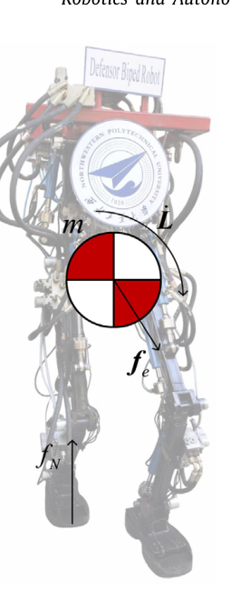
2.2 双环卡尔曼滤波器
第 2.1 节的人形机器人非线性动力学将机器人全身动力学简化为非线性 CoM 动力学。尽管简化过程中没有作人为假设，但该模型与机器人的全身动力学仍有较大差距，因此会引入非零均值、非高斯且相关的过程误差。本文采用 DLKF 这一鲁棒状态估计器补偿该误差。本节简要介绍 DLKF；其详细描述和频域分析见文献[24]。表 1 列出相关数学符号；上标帽号表示估计值，上标 $+$ 表示后验值，上标 $-$ 表示先验值。相关维数依据第 3.2 节的模型给出。
表 1. DLKF 的数学符号。 $k$：时间步；$x\in\mathbb R^9$：系统状态；$u\in\mathbb R^6$：系统输入；$y\in\mathbb R^6$：测量值；$w\in\mathbb R^9,v\in\mathbb R^6$：过程误差和测量噪声；$f(\cdot),h(\cdot)$：状态转移函数和测量函数；$A\in\mathbb R^{9\times9},B\in\mathbb R^{9\times6}$：状态转移矩阵和输入转移矩阵；$H\in\mathbb R^{6\times9}$：测量矩阵；$P\in\mathbb R^{9\times9}$：状态估计误差协方差矩阵；$W\in\mathbb R^{9\times9}$：扰动估计误差协方差矩阵；$C\in\mathbb R^{9\times9}$：估计误差互协方差矩阵，$C=E[(x_k-\hat{x}_k)(w_k-\hat{w}_k)^T]$；$l\in\mathbb R^9,r\in\mathbb R^9$：扰动估计 KF 的过程误差和测量噪声；$Q_l$：扰动估计 KF 的过程误差协方差；$R_m$：状态估计 KF 的测量噪声协方差；$R_r$：扰动估计 KF 的测量噪声协方差。
对于非线性系统，其离散状态空间方程为
$$x_k=f(x_{k-1},u_{k-1})+w_{k-1},\qquad y_k=h(x_k)+v_k.\tag{9}$$
在时间间隔 $\Delta T$ 下，将式 (9) 线性化为矩阵形式：
$$x_k=A_{k-1}x_{k-1}+B_{k-1}u_{k-1}+w_{k-1},\qquad y_k=H_kx_k+v_k.\tag{10}$$
传统 EKF 将 $w$ 视为零均值、高斯且不相关的过程误差。因此，使用简化模型估计人形机器人状态时会产生误差。除原有的状态估计 KF 环路外，DLKF 增加一个扰动估计 KF 环路，实时估计 $w$，从而补偿模型误差导致的估计误差，提高状态估计器对模型误差的鲁棒性。扰动估计 KF 环路的过程模型和测量模型为
$$w_k=A_{w,k-1}w_{k-1}+l_{k-1},\qquad y_{w,k}=w_k+r_k.\tag{11}$$
其中 $A_w$ 为单位矩阵。这一设定假定过程误差变化缓慢，并且可能具有非零均值。对于人形机器人 CoM 状态估计问题，简化模型与机器人真实动力学之间存在过程误差；该误差具有非零均值，且变化速度远低于滤波周期，因此这一假设是合理的。扰动测量 $y_{w,k}=\hat{x}k^+-f(\hat{x}{k-1}^+,u_{k-1})$ 由状态估计 KF 环路计算得到。DLKF 的预测和更新过程见表 2，算法结构见图 2。
表 2. DLKF 的预测步骤和更新步骤。 预测：①状态预测 $\hat{x}k^-=f(\hat{x}{k-1}^+,u_{k-1})+\hat{w}{k-1}^+$；②先验状态协方差 $P_k^-=A{k-1}P_{k-1}^+A_{k-1}^T+A_{k-1}C_{k-1}^++C_{k-1}^{+T}A_{k-1}^T+W_{k-1}^+$；③扰动预测 $\hat{w}k^-=A{w,k-1}\hat{w}{k-1}^+$；④先验扰动协方差 $W_k^-=A{w,k-1}W_{k-1}^+A_{w,k-1}^T+Q_l$；⑤先验估计误差互协方差 $C_k^-=A_{k-1}C_{k-1}^+A_{w,k-1}^T+W_{k-1}^+A_{w,k-1}^T$。更新：①状态卡尔曼增益 $K_k=P_k^-H_k^T(H_kP_k^-H_k^T+R_{m,k})^{-1}$；②状态估计校正 $\hat{x}k^+=\hat{x}_k^-+K_k(y_k-h(\hat{x}_k^-))$；③更新状态协方差 $P_k^+=(I-K_kH_k)P_k^-$；④扰动卡尔曼增益 $G_k=C_k^{-T}H_k^TK_k^T(K_kH_kP_k^-H_k^TK_k^T+K_kR_kK_k^T+R_r)^{-1}$；⑤扰动估计校正 $\hat{w}_k^+=\hat{w}_k^-+G_k(y{w,k}-\hat{w}_k^-)$；⑥更新扰动协方差 $W_k^+=W_k^--G_kK_kH_kC_k^--C_k^{-T}H_k^TK_k^TG_k^T+G_kP_k^-H_k^TK_k^TG_k^T+G_kR_rG_k^T$；⑦更新估计误差互协方差 $C_k^+=(I-K_kH_k)C_k^--(I-K_kH_k)P_k^-H_k^TK_k^TG_k^T+K_kR_kK_k^TG_k^T$。
3. 非线性状态估计框架
本文非线性状态估计框架的目标是估计 CoM 状态。该框架包括浮动基座运动学估计和 CoM 状态估计；完成浮动基座运动学估计后，即可实现 CoM 状态估计。
3.1 基于 IEKF 的浮动基座运动学估计
对于移动机器人，准确且收敛快速的浮动基座运动学估计器有助于人形机器人的状态估计。本文使用 IEKF（不变扩展卡尔曼滤波器）。IEKF 利用某些矩阵李群上的群仿射性质，在非线性过程模型下实现线性误差传播，从而兼顾精度与快速收敛[14]。本节概述基于 IEKF 的浮动基座运动学估计器；更多细节见文献[16,17]。相关数学符号见表 3，其中上标 $I$ 表示 IEKF。
首先通过 FSR 测量的力检测接触足：
$$f_{N,*}>f_{th}.\tag{12}$$
其中 $f_{N,*}$ 是 * 号脚的垂直接触力，$f_{th}$ 是阈值。若式 (12) 成立，则判定 * 号脚为接触足。
图 3. Defensor 液压双足机器人的三维结构（左）及简化结构（右）。机器人有 12 个驱动自由度；单腿有 6 个自由度，包括髋部 3 个、膝部 1 个、踝部 2 个。
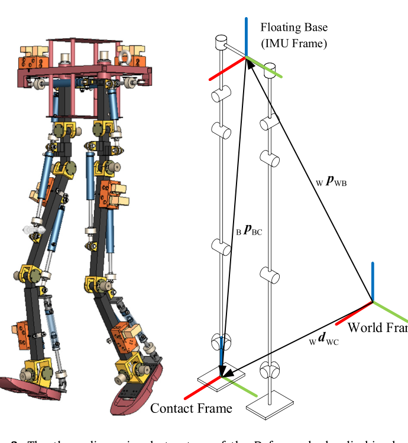
估计器的状态包含两部分：一部分是矩阵李群，包括 $R_{WB}$、$^Wv_{WB}$、$^Wp_{WB}$ 和 $^Wd_{WC}$，如式 (13) 与图 3 所示。为便于阅读，省略下标：
$$X\triangleq\begin{bmatrix}R&v&p&d\0_{1,3}&1&0&0\0_{1,3}&0&1&0\0_{1,3}&0&0&1\end{bmatrix}\in SE_3(3).\tag{13}$$
另一部分无法并入矩阵李群，将其写为向量
$$\theta\triangleq\begin{bmatrix}b^g\b^a\end{bmatrix}\in\mathbb R^6.\tag{14}$$
估计器的预测步骤如下。状态预测：
$$\begin{aligned}\hat R_k^-&=\hat R_{k-1}^+\exp((\omega_k-\hat b_{k-1}^{g+})\Delta t),\ \hat v_k^-&=\hat v_{k-1}^++\hat R_{k-1}^+(a_k-\hat b_{k-1}^{a+})\Delta t+g\Delta t,\ \hat p_k^-&=\hat p_{k-1}^++\hat v_{k-1}^+\Delta t+\tfrac12\hat R_{k-1}^+(a_k-\hat b_{k-1}^{a+})\Delta t^2+\tfrac12g\Delta t^2,\ \hat d_k^-&=\hat d_{k-1}^+,\quad \hat b_k^{g-}=\hat b_{k-1}^{g+},\quad \hat b_k^{a-}=\hat b_{k-1}^{a+}. \end{aligned}\tag{15}$$
先验状态估计误差协方差矩阵为
$$P_{I,k}^-=\exp(A_{I,k-1}\Delta t)P_{I,k-1}^+\exp(A_{I,k-1}\Delta t)^T+\exp(A_{I,k-1}\Delta t)Q_{k-1}\exp(A_{I,k-1}\Delta t)^T\Delta t.\tag{16}$$
其中 $A_{I,k}$ 为原文给出的 $6\times6$ 分块误差矩阵，其非零块分别为 $-(\hat R_k^+)^T$、$(g)\times$、$-(\hat v_k^+)\times\hat R_k^+$、$-(\hat p_k^+)\times\hat R_k^+$ 和 $-(\hat d_k^+)\times\hat R_k^+$；$Q_k$ 由 IMU 噪声协方差经 $\operatorname{Ad}_{\hat X_k^+}$ 映射得到。原 PDF 此处矩阵排版交叠，以上按图像可辨识部分概述，不将缺失项猜写。
更新步骤如下。状态卡尔曼增益：
$$K_{I,k}=P_{I,k}^-H_{I,k}^T(H_{I,k}P_{I,k}^-H_{I,k}^T+N_k)^{-1}.\tag{17}$$
其中 $H_{I,k}=[0\ 0\ -I\ I\ 0\ 0]$，$N_k$ 由浮动基座旋转矩阵、几何雅可比矩阵及编码器噪声协方差构成。状态估计校正：
$$ (\hat X_k^+,\hat\theta_k^+)=(\exp(K_k^\xi(\hat X_k^-Y_k))\hat X_k^-,\ \hat\theta_k^-+K_k^\zeta(\hat X_k^-Y_k)).\tag{18}$$
其中 $K_k^\xi,K_k^\zeta$ 为 $K_{I,k}$ 中对应的行，$Y_k^T=[B_{pBC}(\alpha_k)\ 0\ 1\ -1]$。更新状态估计误差协方差矩阵：
$$P_k^+=(I-K_{I,k}H_{I,k})P_{I,k}^-(I-K_{I,k}H_{I,k})^T+K_{I,k}N_kK_{I,k}^T.\tag{19}$$
需要指出的是，受传感器限制，位置 $p$ 和旋转矩阵 $R$ 的偏航分量不可观测。实际中，随着误差累积，这些量会发散。
表 3. IEKF 数学符号。 $R_{WB}$：世界坐标系中的浮动基座旋转矩阵；$^Wv_{WB}$：世界坐标系中的浮动基座速度；$^Wp_{WB}$：世界坐标系中的浮动基座位置；$^Wd_{WC}$：世界坐标系中的接触坐标系原点位置；$b^g,b^a$：IMU 陀螺仪和加速度计偏置；$\omega,a$：IMU 测得的角速度和加速度；$g$：重力加速度；$w^g,w^a,w^{bg},w^{ba}$：陀螺仪、加速度计及其偏置的零均值高斯噪声；$w^v$：接触坐标系滑动速度；$\alpha\in\mathbb R^N$：关节角；$B_{RBC}$：接触坐标系相对浮动基座的朝向；$w_I=\operatorname{vec}(w^g,w^a,0_{3,1},B_{RBC}(\alpha_k)w^v,w^{bg},w^{ba})$；$J_v(\cdot)$：线速度几何雅可比矩阵；$w_{\alpha_k}$：编码器零均值高斯噪声；$p_{BC}$：接触坐标系相对浮动基座的位置。
3.2 基于非线性动力学与 DLKF 的 CoM 估计
本节详细说明基于非线性动力学与 DLKF 的 CoM 状态估计器。数学符号与第 2 节及第 3.1 节相对应。
系统状态包括 CoM 位置、CoM 速度和外力，状态向量定义为
$$x=[c^x\ c^y\ c^z\ \dot c^x\ \dot c^y\ \dot c^z\ f_e^x\ f_e^y\ f_e^z]^T.\tag{20}$$
系统输入包括 ZMP 位置、垂直接触力和角动量变化率，输入向量为
$$u=[z^x\ z^y\ z^z\ f_N\ \dot L^x\ \dot L^y]^T.\tag{21}$$
其中 $f_N$ 可由 FSR 直接测得，ZMP 位置可根据式 (3) 计算。$f_i^z$ 是单个 FSR 测得的垂直接触力，$p_i={}^Wp_{WB}+{}^WR_{WB}{}^Bp_{Bi}(\alpha)$，${}^Bp_{Bi}$ 是第 $i$ 个 FSR 在浮动基座坐标系中的位置；$^Wp_{WB}$ 和 $^WR_{WB}$ 由浮动基座运动学估计器得到。
假设机器人绕浮动基座转动的惯量为常数 $I_b$，则
$$\dot L=I_b\dot\omega+\omega\times I_b\omega.\tag{22}$$
系统测量包括 CoM 位置与 CoM 加速度：
$$y=[c^x\ c^y\ c^z\ \ddot c^x\ \ddot c^y\ \ddot c^z]^T.\tag{23}$$
其中 $c$ 由浮动基座运动学估计器、正向运动学和计算机辅助设计（CAD）模型共同计算。另假设 CoM 与 IMU 位于同一刚体上（人形机器人的 IMU 通常安装于躯干，CoM 也可近似视为位于躯干，因此这一假设合理），则 $\ddot c=a+\omega\times(\omega\times r_c)+\dot\omega\times r_c$[20]；其中 $r_c$ 是通过正向运动学计算的 IMU 到 CoM 的向量。
由式 (6)–(8)，状态 $x$ 的非线性动力学方程为
$$\dot x=g(x,u)+w_x.\tag{24}$$
$$g(x,u)=\begin{bmatrix}\dot c^x\\dot c^y\\dot c^z\\dfrac{c^x-z^x}{m(c^z-z^z)}f_N-\dfrac{\dot L^y}{m(c^z-z^z)}+\dfrac1m f_e^x\\dfrac{c^y-z^y}{m(c^z-z^z)}f_N+\dfrac{\dot L^x}{m(c^z-z^z)}+\dfrac1m f_e^y\\dfrac1m(f_N+f_e^z)-g^z\0\0\0\end{bmatrix}+w_x.\tag{25}$$
其中 $w_x$ 为噪声项。将式 (24) 离散化，得到先验值计算所用的状态转移函数：
$$f(x,u)=I_9+g(x,u)\Delta t.\tag{26}$$
再对式 (24) 作一阶泰勒近似，得到 DLKF 的状态转移矩阵：
$$A=I_{9\times9}+\frac{\partial g}{\partial x}\Delta t.\tag{27}$$
其中 $\frac{\partial g}{\partial x}=\begin{bmatrix}0_{3\times3}&I_{3\times3}&0_{3\times3}\G_1&0_{3\times3}&G_2\0_{3\times3}&0_{3\times3}&0_{3\times3}\end{bmatrix}$，$G_1$ 和 $G_2$ 如原文式 (27) 所示（见源 PDF 第 5 页图像）。原式可辨认的 $G_2=\frac1mI_3$；为避免把版面提取中的细节错误引入译文，此处矩阵完整项仍以源页图像为准。
类似地，可得非线性测量模型
$$y=h(x,u)+v.\tag{28}$$
$$h(x,u)=\begin{bmatrix}c^x\c^y\c^z\\dfrac{c^x-z^x}{m(c^z-z^z)}f_N-\dfrac{\dot L^y}{m(c^z-z^z)}+\dfrac1m f_e^x\\dfrac{c^y-z^y}{m(c^z-z^z)}f_N+\dfrac{\dot L^x}{m(c^z-z^z)}+\dfrac1m f_e^y\\dfrac1m(f_N+f_e^z)-g^z\end{bmatrix}.\tag{29}$$
对式 (28) 作一阶泰勒近似，得到 DLKF 的测量矩阵
$$H=\begin{bmatrix}I_{3\times3}&0_{3\times3}&0_{3\times3}\H_1&0_{3\times3}&H_2\end{bmatrix}.\tag{30}$$
其中 $H_1$、$H_2$ 如原文式 (30) 所示。该过程模型使用了人形机器人的完整 CoM 非线性动力学，但仍会产生传统 EKF 无法补偿的非零均值、非高斯且相关的误差（见图 4）。误差来源包括：模型参数与真实参数的差异，如质量 $m$ 和惯量 $I_b$；将多刚体系统运动过程中的惯量视为常数并不现实；多刚体系统和驱动系统（Defensor 人形机器人为液压系统）等未建模因素；以及真实样机与 CAD 模型之间的标定误差。ZMP 根据式 (3) 计算，因此 FSR 位置误差也会在预测步骤中引入非高斯噪声。
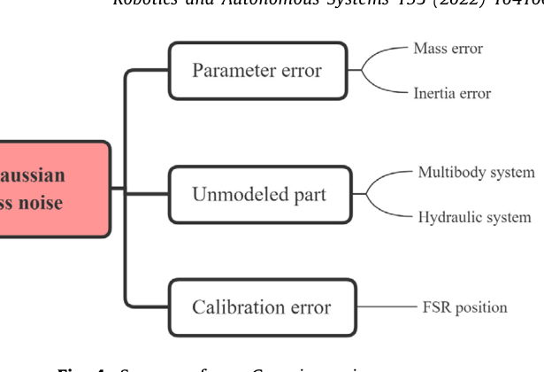
因此，需要使用 DLKF 补偿过程模型中的非高斯噪声。将式 (25)–(30) 代入第 2.2 节的 DLKF，即可直接将 DLKF 与非线性模型结合以补偿过程误差。完整的非线性状态估计框架见图 5。为进一步说明算法流程，本文在附录中用伪代码总结了人形机器人非线性状态估计框架。
图 5. 人形机器人非线性状态估计器总体框架。左侧为 Defensor 液压双足机器人相关传感器的位置，右侧为算法流程；黄色部分为滤波器，灰色部分为辅助计算。
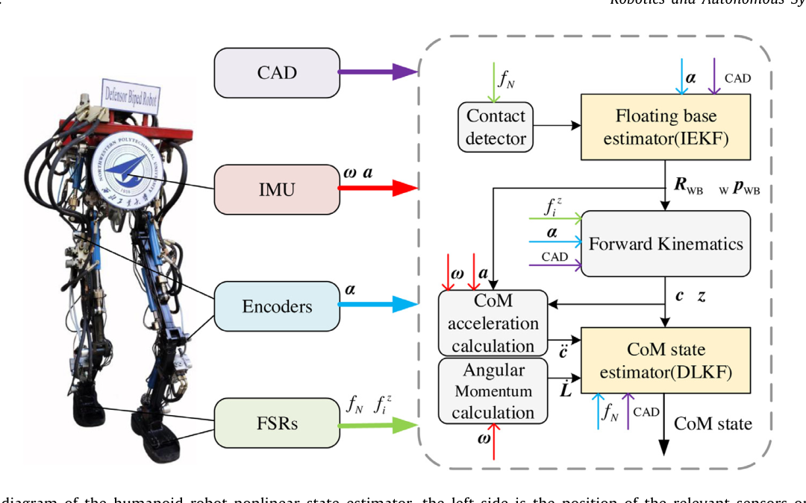
图 6. 安装于足底的 4 个 FSR。
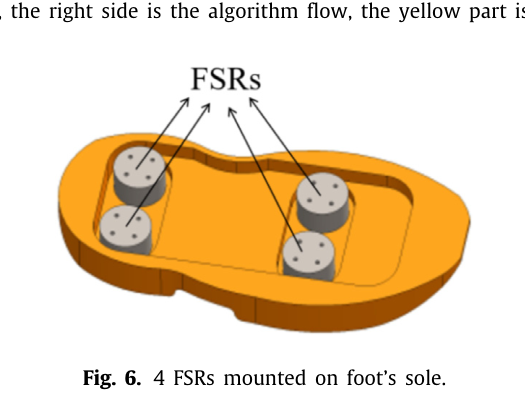
4. 仿真
本节验证并比较本文提出的人形机器人非线性状态估计框架。比较算法时需要机器人的真实状态，以衡量估计误差。由于真实环境中存在许多不可控因素，难以准确测量机器人状态，因此本文在虚拟环境中验证算法。虚拟环境使用 Simscape Multibody[31]，可直接读取并计算内部变量中的机器人真实状态。本节先介绍算法验证框架与仿真条件，再比较不同算法对 CoM 状态和 DCM 的估计精度，最后使用 IEKF 估计浮动基座，并仿真完整的非线性状态估计框架。
4.1 验证框架与条件
本文使用研究团队开发的 Defensor 液压双足机器人进行算法验证。其三维结构和简化结构见图 3，实体样机见图 5 左侧。机器人腰部安装了与浮动基座重合的 IMU。每个关节均装有绝对角位移编码器，全身共 12 个编码器。每只脚安装 4 个 FSR（见图 6）。
机器人的步行控制采用分层控制方法[32,33]，控制架构见图 7。输入指令是机器人在冠状面和矢状面方向上的参考速度。顶层规划机器人步态，本文采用文献[3]基于模型预测控制（MPC）的步态规划方法；中间层计算逆运动学、稳定性控制和机器人状态估计。逆运动学求解和稳定性控制采用基于质心雅可比矩阵的数值方法[34]。状态估计器为本文提出的非线性状态估计器。底层是虚拟环境中的机器人虚拟样机模型，液压部分由 Simscape Fluids[35] 仿真。
图 7. 分层控制架构。左侧为反馈路径，右侧为控制路径。
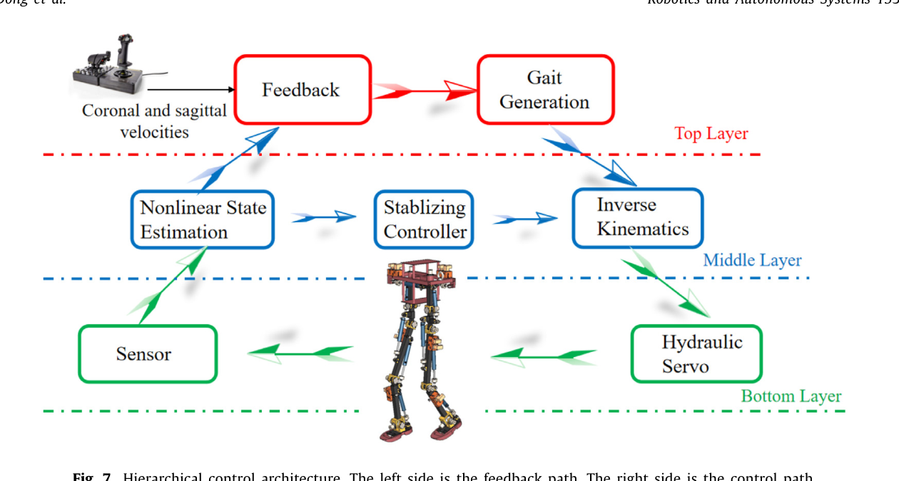
图 8. Defensor 液压双足机器人在虚拟环境中行走。
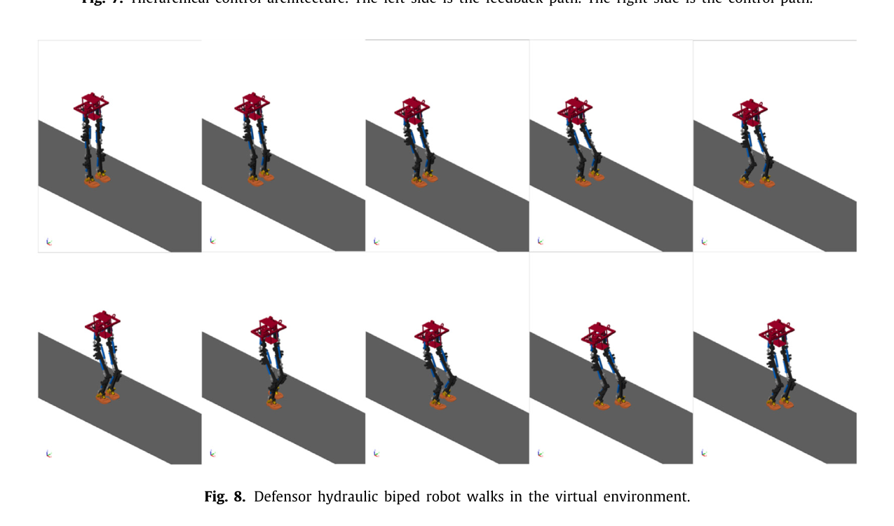
算法验证在个人笔记本电脑上进行，软硬件信息见表 4。
表 4. 软件与硬件。 操作系统：Windows 10 64 位家庭中文版；CAD 软件：SolidWorks 2020 64 位；仿真软件：MATLAB/Simulink R2020b 64 位；CPU：i7-7700HQ；内存：16 GB；硬盘：1 TB SSD。
仿真参数见表 5，其中 $h_c$ 为规划的 CoM 高度。机器人总计行走 20 s：矢状方向参考速度在 0–1 s 为 0 m/s，在 1–4 s 为 0.1 m/s，之后为 0.2 m/s；冠状方向参考速度始终为 0 m/s。机器人在虚拟环境中的运动见图 8。
表 5. 仿真参数。 总质量 $m=114.8$ kg；$I_{xx}^b=0.5$ kg·m²；$I_{yy}^b=0.3$ kg·m²；$I_{zz}^b=0.5$ kg·m²；规划 CoM 高度 $h_c=0.76$ m。
算法验证流程见图 9。虚拟环境输出的含虚拟噪声传感器数据输入估计器。考虑到真实环境下真实机器人质量参数常与 CAD 模型中的参数不同，本文使用经过微调的 CAD 相关质量参数来反映模型误差。
图 9. 算法验证流程图；红色部分为添加的虚拟噪声。
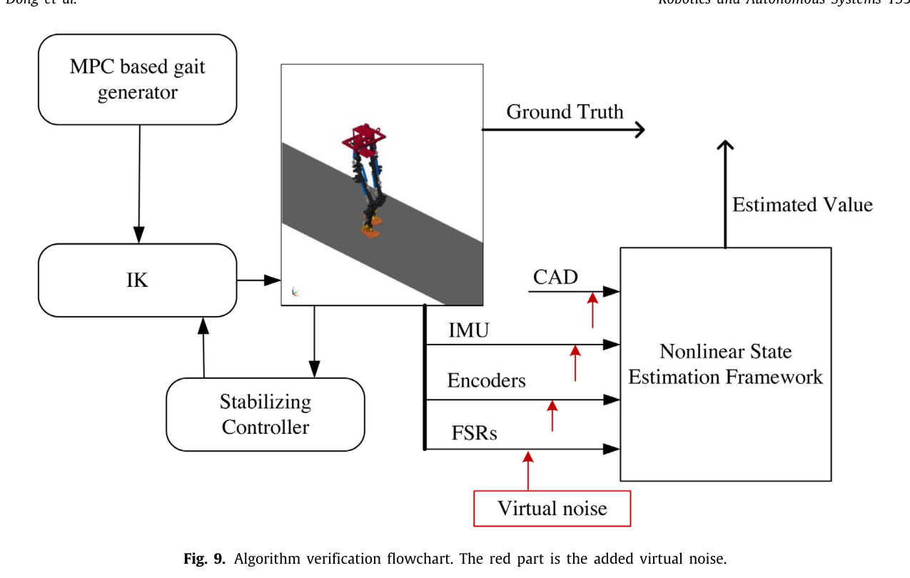
4.2 对比
本场景将本文 CoM 状态估计方法与已有方法进行比较，重点比较以下两种情况：
- 情况 1：非线性动力学 + DLKF。
- 情况 2：非线性动力学 + EKF。
为公平评估，两种情况采用相同的测量噪声协方差，参数见表 6。为消除浮动基座运动学估计器的影响，直接使用真实的 $R_{WB}$ 和 $p_{WB}$ 来计算 CoM 与 ZMP 的位置。
图 10. $x$、$y$、$z$ 三个方向的 CoM 位置估计。
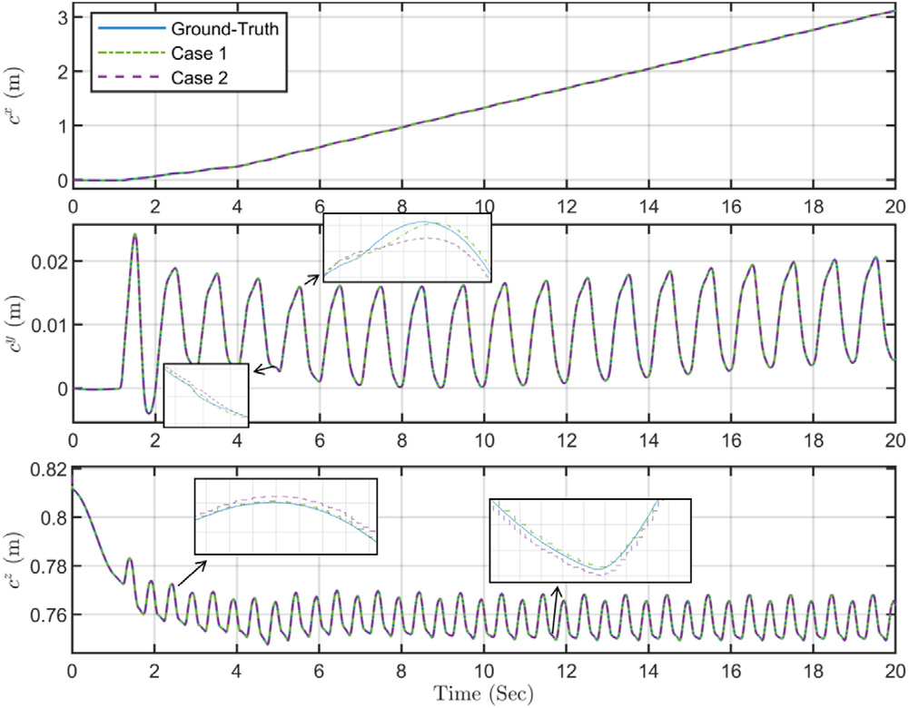
图 11. $x$、$y$、$z$ 三个方向的 CoM 速度估计。
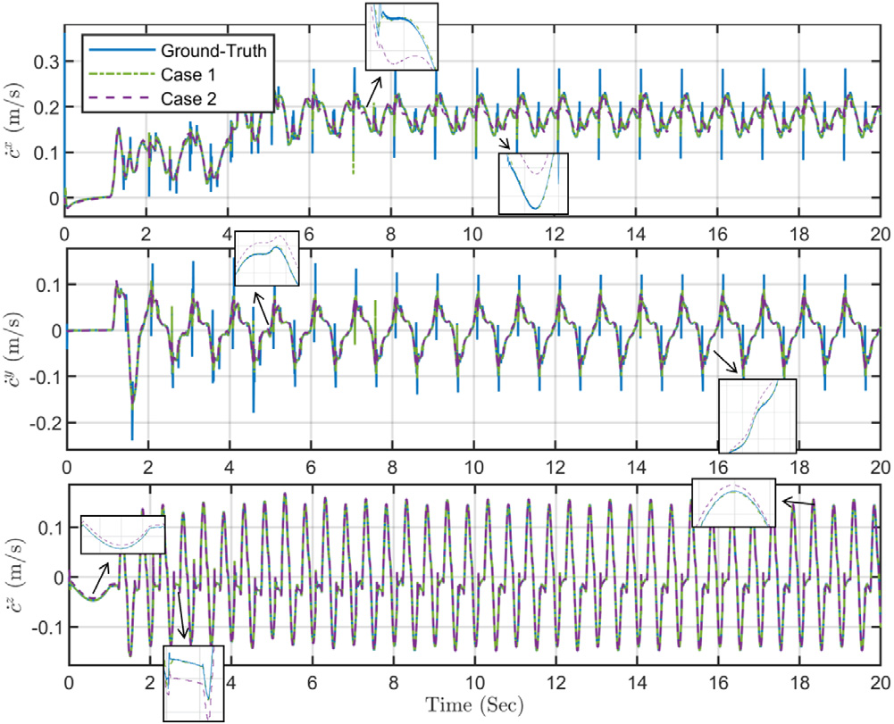
表 6. 滤波器参数。 情况 1（DLKF）的扰动过程协方差 $Q_l$ 和扰动测量噪声协方差 $R_r$：$Q_l$ 对 $c,\dot c,f_e$ 分别为 $10^{-20},10^{-8},10^{-10}$；$R_r$ 对 $c,\dot c,f_e$ 分别为 $10^{-5},10^{-10},10^{-5}$。情况 2（EKF）的过程协方差 $Q$ 对 $c,\dot c,f_e$ 分别为 $10^{-12},10^{-6},10^{-4}$；测量噪声协方差 $R_m$ 对 $c,\ddot c$ 分别为 $10^{-8},4\times10^{-2}$。
除 CoM 状态反馈外，许多控制器还采用 DCM 反馈来控制人形机器人的步行稳定性[36]。图 12 比较了两种情况的 DCM 估计性能。DCM 定义为
$$\xi=c+\frac{1}{\omega_0}\dot c,\qquad \omega_0=\sqrt{\frac{g}{h_c}}.\tag{31}$$
图 12. $x$、$y$、$z$ 三个方向的 DCM 位置估计。
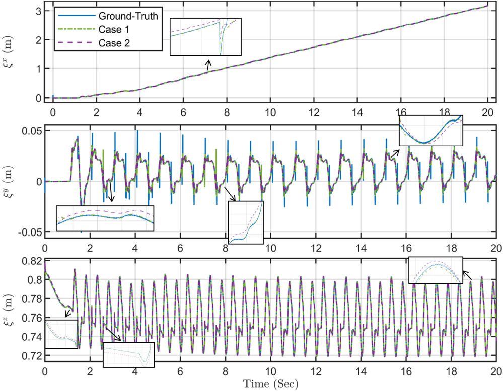
结果表明，由于 DLKF 更好地补偿了参数误差、未建模部分和标定误差造成的非零均值、非高斯且相关的过程误差，情况 1 中 $x$、$y$、$z$ 三个方向上的 CoM 位置、CoM 速度和 DCM 位置估计都更接近真实值，状态估计性能更好。
为更直观地反映滤波器性能，本文计算均方根误差（RMSE），并增加以下两种线性模型情况进行比较：情况 3：线性动力学 + DLKF；情况 4：线性动力学 + KF。线性模型采用文献[19]的式 (12) 和 (19)。结果见表 7。需要指出，线性模型无法估计 $z$ 轴状态。
表 7. CoM 位置、CoM 速度和 DCM 位置的 RMSE。
| 情况 | $c^x$ (m) | $c^y$ (m) | $c^z$ (m) | $\dot c^x$ (m/s) | $\dot c^y$ (m/s) | $\dot c^z$ (m/s) | $\xi_x$ (m) | $\xi_y$ (m) | $\xi_z$ (m) |
|---|---|---|---|---|---|---|---|---|---|
| 1 | 5.3e−5 | 4.1e−5 | 4.9e−5 | 8.3e−3 | 8.7e−3 | 1.8e−3 | 2.3e−3 | 2.5e−3 | 5.0e−4 |
| 2 | 5.5e−5 | 6.1e−5 | 5.0e−5 | 8.6e−3 | 1.4e−2 | 2.5e−3 | 2.4e−3 | 3.8e−3 | 7.0e−4 |
| 3 | 1.2e−3 | 6.3e−4 | — | 2.0e−1 | 2.4e−1 | — | 5.5e−2 | 6.6e−2 | — |
| 4 | 1.2e−3 | 6.3e−4 | — | 3.0e−1 | 3.8e−1 | — | 8.0e−2 | 1.1e−1 | — |
从情况 4 到情况 1，估计器性能逐步改善。性能提升来自两方面：非线性模型和 DLKF，其中非线性模型对精度的影响更大。本文提出的非线性动力学 + DLKF（情况 1）达到最佳估计性能。与情况 3 相比，在 $x$ 方向，CoM 位置 RMSE、CoM 速度 RMSE 和 DCM 位置 RMSE 均降低 96%；在 $y$ 方向，三项误差分别降低 93%、96% 和 96%。与情况 2 相比，在 $x$ 方向三项误差分别降低 4%、3% 和 4%；在 $y$ 方向分别降低 33%、38% 和 34%；在 $z$ 方向，CoM 位置、CoM 速度和 DCM 位置 RMSE 分别降低 2%、28% 和 29%。
4.3 完整框架仿真
本场景验证完整的非线性估计框架。浮动基座运动学由 IEKF 估计（见图 13），并用于计算测量中的 ZMP 和 CoM 位置以及 CoM 加速度。可以看到，由于浮动基座位置不可观测，随着积分误差累积，估计误差会发散。
图 13. IEKF 在世界坐标系下估计的浮动基座位置（左）和速度（右）。
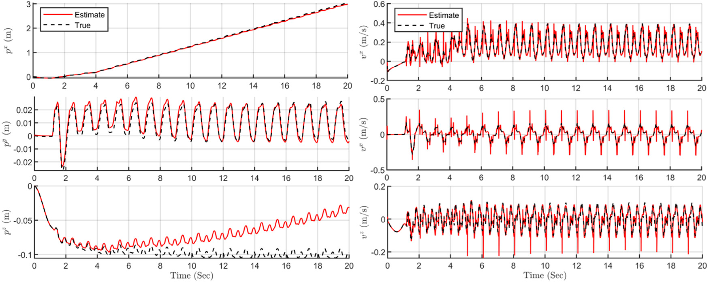
CoM 状态估计结果见图 14。初始阶段，该框架能够较准确地估计 CoM 状态；但由于浮动基座估计发散，CoM 位置也会随时间发散。与现有状态估计器相比，本文提出的非线性状态估计框架在 CoM 和 DCM 状态估计上精度更高。这对采用 CoM 或 DCM 作为反馈状态的控制器至关重要。
图 14. 完整非线性状态估计框架的 CoM 位置估计。
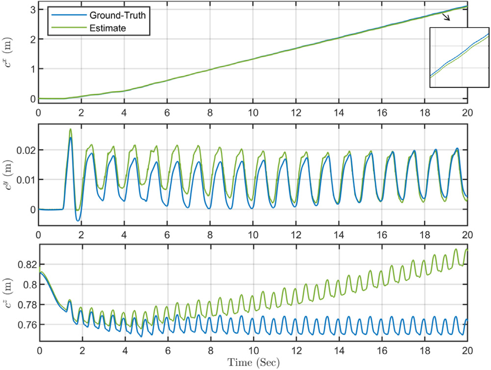
5. 结论
本文基于人形机器人非线性动力学和 DLKF，提出一种人形机器人非线性状态估计框架，并将该框架用于估计 CoM 与 DCM 状态。
以往研究中的线性简化模型（LIPM 或 CIP）过于简单，忽略了人形机器人运动中的许多关键动力学，因此难以在预测步骤中获得良好结果。本文直接采用基于 CoM 动力学的非线性模型，不对机器人动力学作人为假设，从而提高了预测步骤的估计精度。但相对于全身动力学，非线性 CoM 动力学仍然是简化模型，因为人形机器人是高度复杂的动力系统。该简化不可避免地会在预测步骤中引入非零均值、非高斯且相关的误差，传统 EKF 难以处理。本文将 DLKF 与非线性动力学结合，提出 CoM 状态估计器。DLKF 对这类误差具有鲁棒性，因此能够补偿预测步骤中由参数误差、未建模驱动系统和标定误差造成的过程误差。
虚拟环境仿真结果表明，与传统人形机器人线性和非线性状态估计器相比，本文提出的非线性状态估计框架对 CoM 和 DCM 状态的估计精度更高。这有助于提升通常采用 CoM 或 DCM 作为反馈状态的控制器性能。
不过，在浮动基座运动学估计器中，基座位置和基座朝向的偏航分量不可观测，因此 CoM 位置不可观测，误差会随时间增长。未来工作将研究使用 GPS、激光雷达和机器视觉等其他传感器解决不可观测问题。此外，第 3.1 节描述的接触检测机制较为简单，未来将采用更先进的接触检测方法[37,38]。
利益冲突声明
作者声明，他们没有已知的可能影响本文所报告研究工作的经济利益冲突或个人关系。
资金支持
本研究部分得到中国甘肃省科技计划项目资助，项目编号：20JR5RA483。
附录：算法伪代码
原文附录以图像给出以下流程：
- 浮动基座运动学估计： 由左右脚 FSR 输入接触检测器，确定当前接触足；将 IMU 陀螺仪、IMU 加速度计、关节编码器和 CAD 参数输入 IEKF 基座估计，得到基座位姿估计。
- CoM 状态估计： 根据基座估计、编码器和 CAD 参数进行正向运动学，计算 CoM 位置和 ZMP 位置；由基座估计、CoM 位置、IMU 陀螺仪、IMU 加速度计和编码器计算 CoM 加速度；由 IMU 陀螺仪和 CAD 参数计算角动量；最后将 CoM 加速度、角动量、CoM 位置、ZMP 位置、FSR 和 CAD 参数输入 DLKF，输出 CoM 位置、CoM 速度和外力估计。
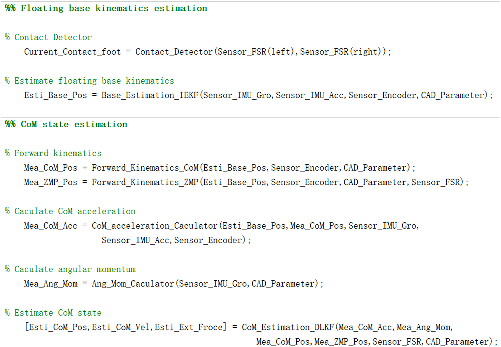
参考文献
原文参考文献 [1]–[38] 保留英文书目信息，以便检索和核对；正文中的引文序号保持不变。完整书目见原始 PDF 第 11–12 页。
作者简介
原文第 11–12 页刊载五位作者的英文简介和照片。此处按原文保留照片素材；中文简介：Jingchao Li、Zhaohui Yuan、Sheng Dong、Jingqin Zhang 和 Jianrui Zhang 分别从事人形机器人状态估计、液压人形机器人运动控制、检测仪器与系统控制、机器人控制及机电与机器人等研究。原 PDF 提取到的作者简介版面顺序与照片对应关系不够稳定，故不在此逐人配对，以免误配。